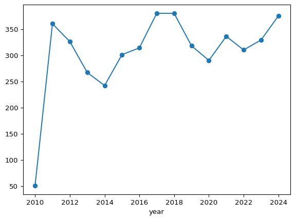

import matplotlib.pyplot as plt7 Project Part 4.1: Visualizations & Trends in Python
Data visualization is the practice of representing data graphically to reveal patterns, trends, and insights that might be difficult to interpret from tables or raw numbers alone. The fundamentals of data visualization include selecting appropriate graphical representations, ensuring clarity and accuracy, and emphasizing key insights while avoiding misleading representations (1).
While data visualization involves many concepts, techniques, and considerations, we will focus on fundamental visualization types commonly used in exploratory data analysis (e.g., bar charts, histograms, box plots, line charts, and scatter plots). We can create these visualizations in Python and R using relatively simple coding techniques.
There are many considerations that need to be taken into account when determining how to effectively create visualizations. When making decisions that impact the characteristics of a chosen visualizations we can aim to:
- simplify information,
- concisely communicate findings,
- inform or support decision-making,
- depict relationships within data, among other considerations.
For this course we’ll focus on choosing data visualizations that help to identify patterns within data.
7.1 A few guidelines
To understand features of the data we can start by selecting a visualization that is appropriate for a particular data type. For example, if we’re attempting to gain insight into a single variable consisting of categorical data, we might select a bar chart. This choice of visualization could allow us to compare the frequencies of the various factor levels. For a numerical variable, a histogram could provide similar information and depict relative frequencies or, more generally, the distribution of data values. To gain insights into bivariate relationships, we might consider mosaic plots for two categorical variables, or scatterplots for two quantitative variables. We could even extend the information depicted in a 2-dimensional visualization to multiple variables by including color, facets, and other overlays. Other visualizations that may be informative in depicting trends are line charts, which can show patterns over time (e.g., a time series), or perhaps a spaghetti plot to visualize grouped trends over time. For determining a graphical representation of data, consider: “What visualization can I choose to clearly emphasize trends and patterns while avoiding clutter and unnecessary complexity.”
Here are a few guidelines:
- minimize clutter
- use appropriate scales and dimensions
- clearly label axes
- consider order when appropriate (e.g., ordinal information)
Your visualization should be self explanatory to a viewer. This means that there should not be a need to explain all of the details of the visual beyond the information conveyed by the visualization itself.
7.2 Visualizations in python
Although R has excellent visualization capabilities, such as those available through the ggplot2 library, visualizations in Python can be embedded into a larger data science workflow when Python is the preferred language and switching languages or platforms is not desirable. However, utilizing the best of both languages is always an option, especially in platforms that can accommodate multiple languages, such as Quarto, Jupyter Notebook, VSCode, Google Colab and others. In this chapter, we focus on visualizations in python.
7.2.1 Common libraries for python visualizations
Below, we will preview two common python visualization libraries and learn how to leverage these methods to learn about our data and investigate trends within.
matplotlib
matplotlib is a Python library that provides a framework for generating and customizing visualizations. It supports various plot types, including line plots, scatter plots, bar charts, histograms, and more. matplotlib integrates well with other libraries, such as pandas and supports various output formats, including PNG, PDF, and SVG.
matplotlib.pyplot
The primary module from matplotlib that we’ll use is pyplot. To access pyplot functionality, we need to import both the matplotlib library and the pyplot module.
In the code above, we used dot notation where matplotlib is the library, pyplot is the module, and plt is the alias.
pandas
pandas provides built-in plotting functionality that allows you to generate visualizations directly from Series and DataFrames. It uses matplotlib.pyplot for plotting through the .plot() method. This offers a simple way to create basic plots, which can be further customized using matplotlib attributes such as plt.title(), plt.xlabel(), and plt.ylabel().
import pandas as pd7.3 Chart Types
The updated Star Wars dataset comes from the webpage Introduction to Data Analysis Using the Star Wars Dataset by Fabricio Batista Narcizo. This dataset includes information on 87 characters from the first seven episodes of the Star Wars movie saga (the Original Trilogy, the Prequel Trilogy, and The Force Awakens). The author documents the process used to update the Star Wars dataset with additional information from the Star Wars API (SWAPI).
The Star Wars dataset contains both categorical and numerical variables that describe each character. We will use this data to demonstrate data visualization in Python, specifically using the matplotlib.pyplot module and the .plot() function from pandas.
We will import Pandas and Matplotlib, load the Star Wars dataset, review the variables within, and create related visualizations.
import pandas as pd
import matplotlib.pyplot as plt
starwars = pd.read_csv("updated_starwars.csv")
starwars.info()<class 'pandas.core.frame.DataFrame'>
RangeIndex: 87 entries, 0 to 86
Data columns (total 25 columns):
# Column Non-Null Count Dtype
--- ------ -------------- -----
0 name 87 non-null object
1 height 86 non-null float64
2 mass 65 non-null float64
3 hair_color 82 non-null object
4 skin_color 86 non-null object
5 eye_color 87 non-null object
6 birth_year 50 non-null float64
7 birth_era 50 non-null object
8 birth_place 37 non-null object
9 death_year 62 non-null float64
10 death_era 62 non-null object
11 death_place 57 non-null object
12 sex 87 non-null object
13 gender 87 non-null object
14 pronoun 87 non-null object
15 homeworld 83 non-null object
16 species 87 non-null object
17 occupation 87 non-null object
18 cybernetics 7 non-null object
19 abilities 55 non-null object
20 equipment 62 non-null object
21 films 87 non-null object
22 vehicles 15 non-null object
23 starships 20 non-null object
24 photo 87 non-null object
dtypes: float64(4), object(21)
memory usage: 17.1+ KB7.3.1 Bar Plots
A univariate bar plot is a data visualization used to represent categorical data frequencies. The height or length of each bar (and the associated axis or bar labels) typically corresponds to the level frequencies. Bar plots can be used to compare categories and more generally to visualize a categorical distribution.
7.3.1.1 A (Star Wars) Example
Even though Star Wars took place in a galaxy far, far away, spanning multiple planets, space stations, and star systems, many of the main characters were human or droid.
# Count and display the number of characters for each species in the dataset.
starwars['species'].value_counts()species
Human 38
Droid 6
Gungan 3
Mirialan 2
Kaminoan 2
Twi'lek 2
Wookiee 2
Trandoshan 1
Yoda's species 1
Hutt 1
Rodian 1
Neimodian 1
Toydarian 1
Sullustan 1
Mon Calamari 1
Zabrak 1
Aleena 1
Vulptereen 1
Xexto 1
Toong 1
Cerean 1
Dug 1
Ewok 1
Iridonian Zabrak 1
Nautolan 1
Quermian 1
Tholothian 1
Kel Dor 1
Chagrian 1
Geonosian 1
Iktotchi 1
Clawdite 1
Besalisk 1
Skakoan 1
Muun 1
Togruta 1
Kaleesh 1
Umbaran 1
Pau'an 1
Name: count, dtype: int64As seen from the output, .value_counts() returned the various species counts. The returned object is a Series with unique levels (species) as the index and the corresponding counts as values, sorted in descending order of frequency.
A bar plot with all 39 species represented, would likely break the “minimize clutter” rule, eventhough all of the related information may be important. In particular representing the levels with only one representative in the chart would not necessarily be the best representation. As an alternative, we could use data moves to create a new “other” category that contains the species with fewer than a cutoff count. Or, to represent that a majority of characters come from a few specific species, we can simplify the plot by displaying only the top three frequency categories. Below, we take the second approach.
starwars['species'].value_counts()[0:3].plot(kind = 'bar', rot = 0)In the code above, .value_counts() tabulates the occurrences of each species in descending order of frequency, [0:3] filters for the top three entries, and .plot(kind = 'bar') generates the bar plot. The rot = 0 parameter is an option that displays the axis labels horizontally.
Observing the graph and considering our filtering criteria, we now have a visual representation that shows that the Star Wars character species distribution is human-centric, despite the countless planets across a vast galaxy in which the saga unfolds.
7.3.2 Histograms
A histogram is similar to a barplot, but depicts frequencies of binned numerical values vs raw categorical counts. In a histogram, the number of bins is a parameter that impacts the shape of the visualization, as where in a bar plot the number of bars usually corresponds to the number of categorical levels (barring transformation like the filtering we did above). Another common difference between univariate barplots and histograms is that histograms can be displayed using different vertical-axis scales, such as counts, relative frequencies, or densities. When shown on a density scale, the areas of the bars sum to 1 like a probability density function. In contrast, barplots typically display frequencies or proportions for categorical variables, with no regard to bin width or area.
Histograms can reveal characteristics of the data distribution, including patterns such as modality, shape, skewness, unusual observations and other features that may yield insight into the underlying properties of the variable under consideration.
So now that we know about histograms, let’s create one to get a better sense of the distributions of the characters’ heights.
starwars['height'].plot(kind = 'hist')The histogram captures most heights between approximately 160 and 200 centimeters. Additionally, the distribution appears to be unimodal and has a slight left skew where more extreme heights are for shorter characters.
# histogram w modified number of bins
# adding edgecolor helsp distinguish bins
starwars['height'].plot(kind = 'hist', bins = 20, edgecolor = 'white')In the code above, we’ve adjusted the default bins parameter, which impacts the bin widths. Correspondingly the number of observations falling within a bin have decreased. In general, the choice of bins can impact the visualization and so interpretations can be subjective in this way. Thus, a histogram can be particularly useful in an exploratory phase of a data science workflow but may not be the best tool on which to base formal or inferential decisions. Nonetheless, in the modified histogram we see a more granular view of the distribution of the Star Wars characters’ heights.
7.3.3 Boxplots
A boxplot is a visual representation of the “five number summary.” Boxplots depict the distribution of numerical data using the five values, typically represented as a rectangular box and extended lines know as whiskers. The typical five numbers (corresponding to the five number summary) are the minimum, first quartile (Q1), median (Q2), third quartile (Q3), and maximum. The box spans from Q1 to Q3 and represents the middle 50 percent of the data, with a line inside the box marking the median (Q2 value). The whiskers extend from each side of the box and may include the smallest and largest values. Some boxplots have heuristic cutoffs for the whiskers, where the minimum and maximum values are not captured within this range. Matplotlib uses the 1.5 times the interquartile range (IQR) convention for the whisker bounds, where the IQR is the distance between the first quartile (Q1) and the third quartile (Q3), when the minimum and maximum values extend beyond this range.
Like histograms, boxplots can depict skewness and provide visual information about potential unusual observations or values. Boxplots are often used to assess and compare variation and measures of center across groups.
# A boxplot of heights
# NOTE: `vert=False` changes default display from vertical to horizontal.
starwars['height'].plot(kind = 'box', vert = False)Like the histogram of the same variable, the boxplot above shows the distribution of the characters’ heights, but also provides information about the distributional percentiles, or more specifically the quartiles. We can see that the median (Q2) height is approximately at 180 centimeters. We can also see that 50% of the characters have heights approximately between 165 (Q1) and 190 (Q3) centimeters. We can imagine overlaying this boxplot on the histogram and seeing the connections and similar information displayed by each visual.
Next, let’s consider how heights might vary across human and other nonhuman character species. For this, we can filter the data using our most frequent species classifications, Human, Droid, and Gungan. Then we can generate side-by-side boxplots for each group to gain insight into and compare the distributions of heights across these species.
# Define a list with the species to include
species_groups = ['Human', 'Droid', 'Gungan']
# Create a Boolean mask to filter for those species
mask = starwars['species'].isin(species_groups)
# Create a horizontal box plot of height by species
starwars[mask].boxplot(column = 'height', by = 'species', vert = False)In the code above, the .isin() method (from pandas) checks whether each value in column is found within the specified list. For each column entry, if in the list the method returns True and otherwise, False. This result is a Boolean Series that can be used to filter the rows of a DataFrame.
Returning to the visual, we can see that the distribution of heights across the three different species are very different. For example, there is almost no overlap between the heights represented by the boxplots. These differences were hidden in the boxplot and histogram for the entire set of characters. This highlights the need to also consider relationships between variables and how these associations might influence certain observation and interpretations.
However, as we noted in observing the counts of each species, we should keep in mind the frequencies that are represented by the graphs. In particular, there are only three Gungans in the dataset. So, although the boxplot representing Gungan heights has the typical features, the underlying data from which it was generated consists of only a minimum, median, and maximum. Similarly, the Droids are represented by a mere 6 entries, which does not make for an interesting (or useful) five number summary. So, once again, we see that context is paramount in the interpretations of these visuals and the degree of confidence that you may want to assign to them. In fact, you may have seen other droids in The Mandalorian!
7.3.4 Scatterplots
Bivariate scatterplots depict the ordered pairs of two numerical variables of interest as points on a coordinate plane. These visualizations can be used to investigate potential relationships between two variables and can be useful in visualizing patterns such as trends, clusters, and associations. Scatterplots can also show unusual observations and are a standard tool in many model diagnostic procedures, among other uses.
We can use a scatterplot to visualize the relationship between the Star Wars characters’ heights and masses.
# A scatterplot of height vs. mass
starwars.plot(kind = 'scatter', x = 'height', y = 'mass') From the graph, there appears to be a linear relationship between mass and height. However, what may be an increasing trend is obscured by the horizontal access scale. This is due to the observation with an extreme mass value close to 1400 kilograms. Due to the scale distortion resulting from this single observation, we might want to examine how the picture changes if we were to exclude it.
# Find the highest mass in the dataset
max_mass = starwars['mass'].max()
# Create a Boolean mask that removes the character with the highest mass
mask = starwars['mass'] != max_mass
# Create a scatter plot without the outlier
starwars[mask].plot(kind = 'scatter', x = 'height', y = 'mass')Upon excluding the observation with the extreme mass value and re-plotting the points, the suspected increasing trend (i.e., as height increases, mass increases) is more clear. Now that the variation in mass is more discernible via the new visualization, we might even want to consider more dynamic models (e.g., curvilinear), that might better explain the relationship between characters’ heights and masses.
7.3.5 Line Charts
A two-dimensional line chart is a visual representation of data points (ordered pairs) connected by straight lines. These displays typically show numerical changes over an ordered interval. The horizontal axis is typically a numerical variable, a sequence, or an ordered set of meaningful categories.
Line charts are often used to observe series and changes with respect to time. Line charts can also help visualize non-temporal directions of change with respect to categories like “beginner”, “intermediate”, and “advanced”; “low”, “medium”, “high” or other groupings with various levels. The points in the visualization can represent single observations or summary statistics, such as category/group means, corresponding to the associated horizontal axis labels.
7.3.5.1 Line Chart Example
The Ramen Rater dataset consists of review beginning in 2002, but only has records of dates from 2010 onward. To examine how the frequency of instant noodle reviews has varied over the years we can use the ratings dataset (read in below). This dataset was created by extracting review numbers and corresponding dates from the Ramen Rater website. Unlike the Big List, which does not include date information, the ratings dataset enables grouping by year and allows for counting the number of reviews completed annually. This approach offers insight into how the Ramen Rater’s review activity has changed over time.
# Load the Ramen Rater review data
ratings = pd.read_csv("ramen_reviews.csv")
# Group the data by year
grps = ratings.groupby('year')
# Create a line chart, excluding the last year (2025)
grps.size()[:-1].plot(kind='line', marker='o')
The line chart above shows changes in the number of reviews over time. Specifically, we can observe a sharp increase from 2010 to 2011 from approximately 50 reviews to over 360 reviews. For the remainder of years (2012 - 2025), the number of reviews fluctuate between 250 and 390. In general, we can see a relatively consistent recording of reviews over the years.
7.3.6 Customizing Visualizations
The matplotlib library provides a wide range of additional visualization customization options, including feature options such as adding titles and axis labels. Additional options, including some used above, include customized orientations, sizes, shapes, and colors. To explore the extensive list of customization options consult the Matplotlib documentation and consider leveraging the power of generative AI tools, too!
Next, we return to R to explore more visualizations with an eye towards exploration and communication.